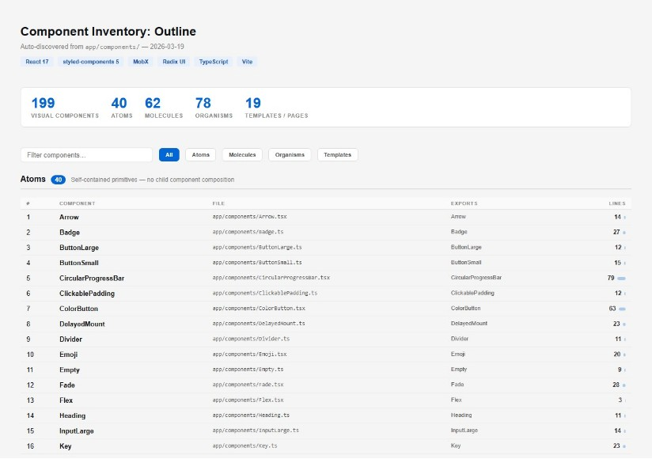
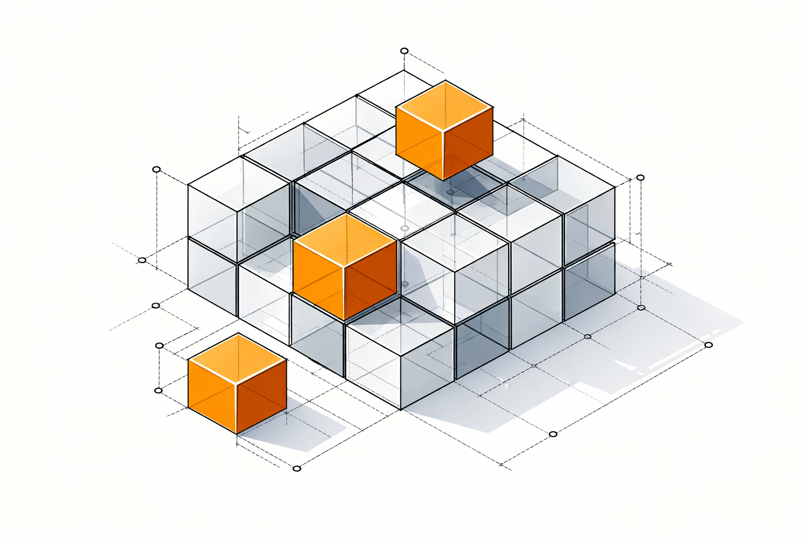
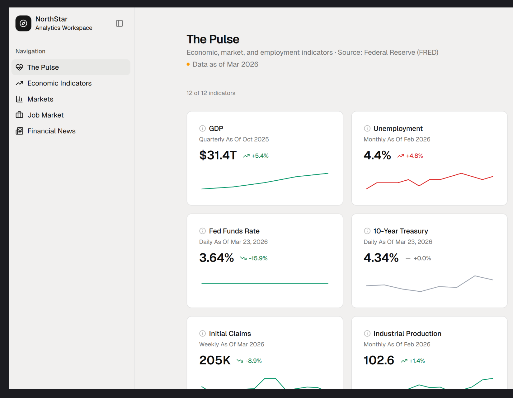
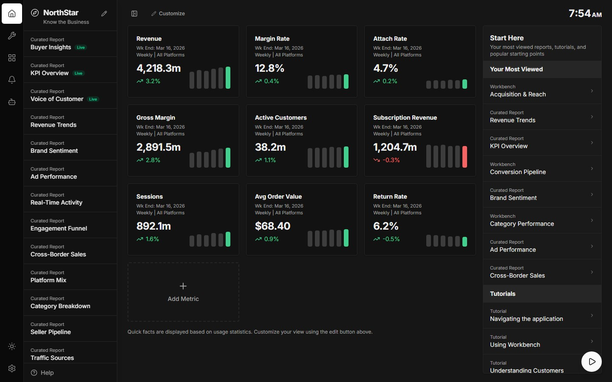
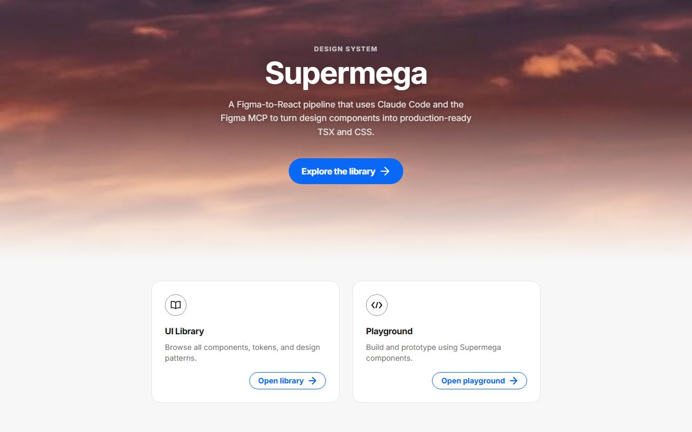
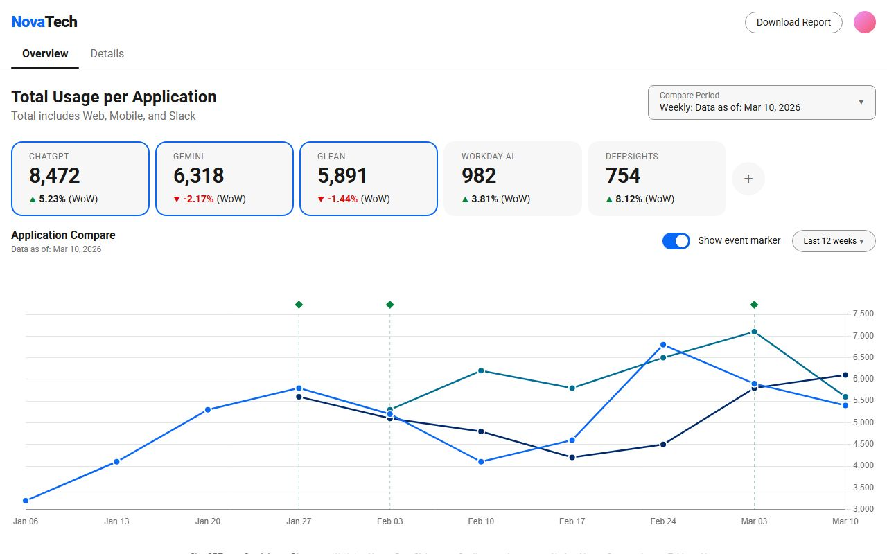
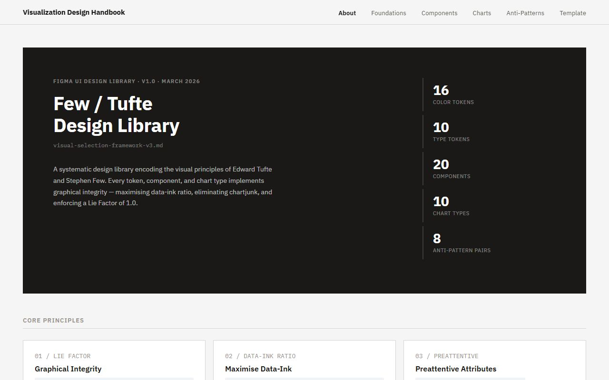
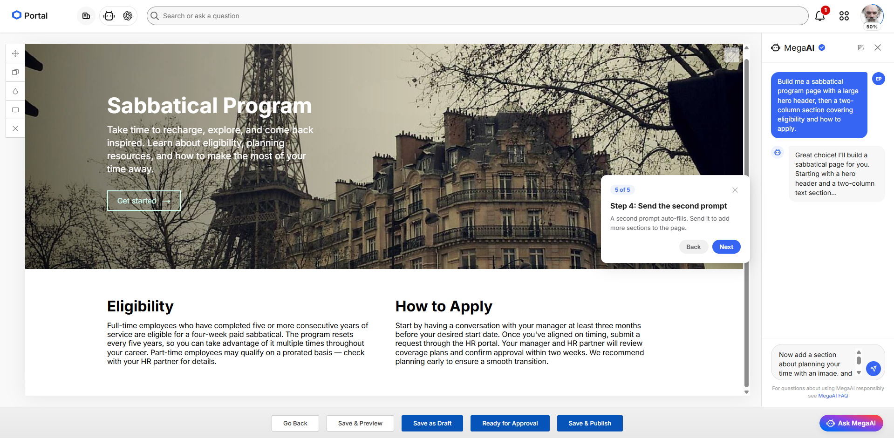
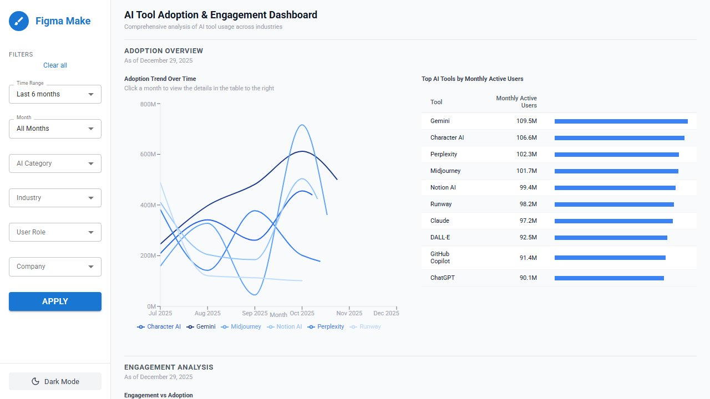
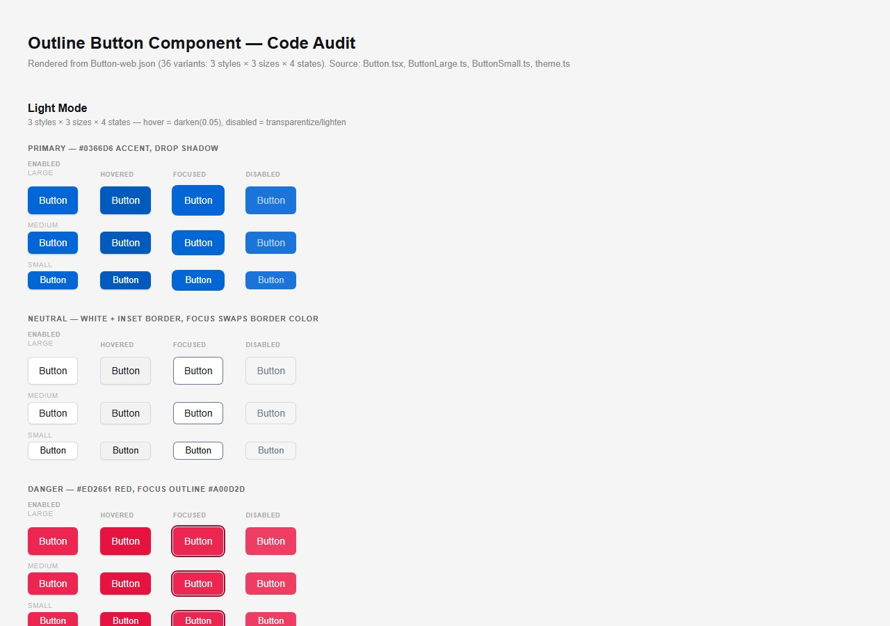

Developer Tool
Claude Skill: Code Audit
Claude Code skill that auto-discovers every UI component in a codebase and generates interactive inventories with designer-facing reference pages.
I'm a senior product designer with 15 years of experience building data-driven enterprise platforms, analytics dashboards, and scalable design systems for Fortune 500 teams. I specialize in transforming complex datasets into clear, accessible visual interfaces that accelerate stakeholder decision-making. I'm experienced leading cross-functional collaboration with product, engineering, analytics, and AI teams across user research, prototyping, design-to-dev handoff, and production.


Live economic and financial indicators dashboard powered by FRED data, featuring interactive time-series charts and customizable KPI cards.
View Demo →
An experiment in Claude Code and Figma integration — enterprise analytics dashboard with KPI cards, curated reports catalog, and responsive three-panel layout.
View Demo →
Interactive design system with component documentation and a playground template. Built using Claude Code AI.
View Demo →
Analytics dashboard tracking AI adoption, usage trends, and performance across applications. Prototyped with Claude Code.
View Demo →
Figma design library encoding Tufte and Few principles for data visualization. Created with Claude Code.
View Demo →
AI-powered page builder prototype with scripted chat demo and animated block assembly. Built entirely with Claude Code.
View Demo →
Data visualization dashboard comparing AI tool adoption, usage trends, and engagement metrics. A Claude Code and Figma Make experiment.
View Demo →Auto-discovered component inventory from the Outline codebase — 199 components classified by atomic design tier. Generated by a Claude Code AI skill.
View Demo →
Auto-generated component reference page for the Outline Button — every variant rendered with token documentation. Generated by a Claude Code skill.
View Demo →Mar 2012 – Feb 2026 · 14 yrs
eBay
Applied design thinking to lead UX and product design for internal enterprise tools supporting finance, analytics, and operational reporting across a 30,000+ employee organization.
Oct 2011 – Mar 2012 · 6 mos
Highwood Design
Sep 2010 – Nov 2011 · 1 yr 3 mos
Joomlashack
EDUCATION 2000 - 2005
University of Louisiana at Lafayette
Overview
Gallery